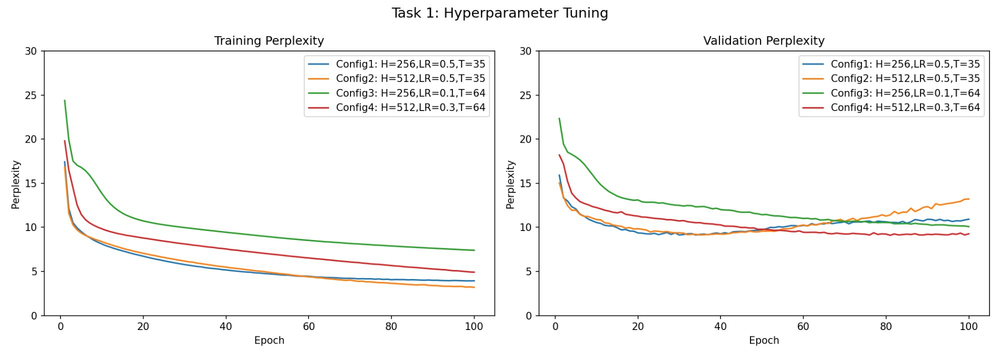
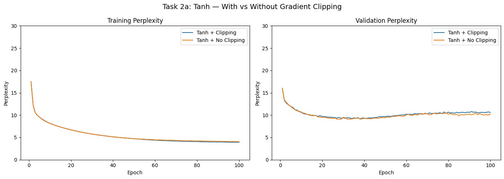
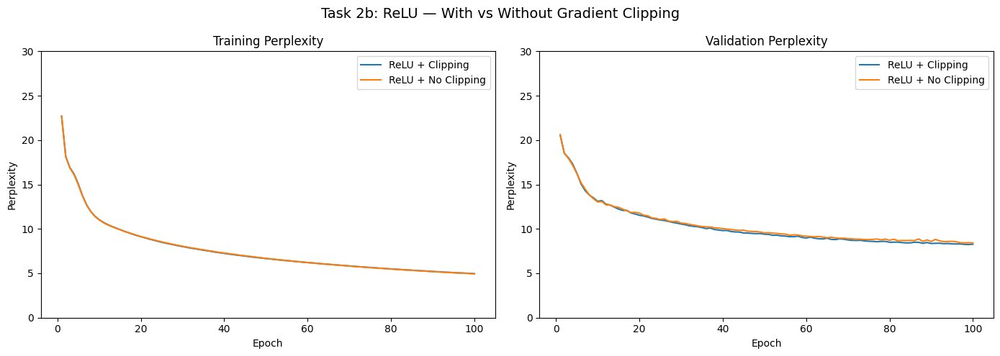
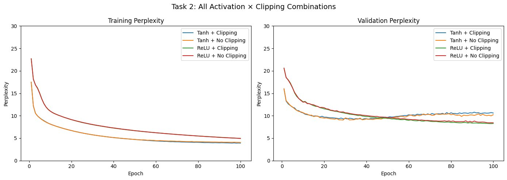
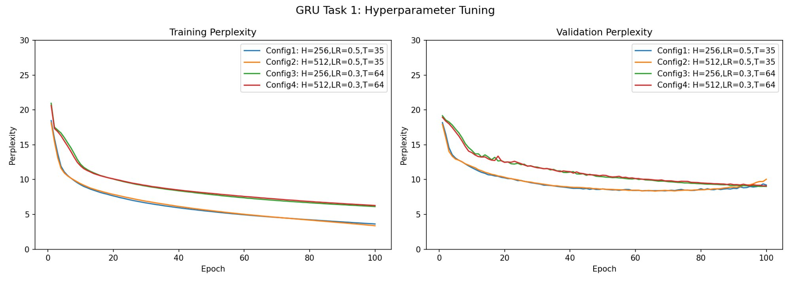
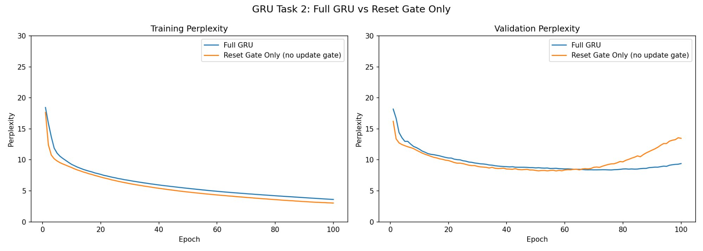
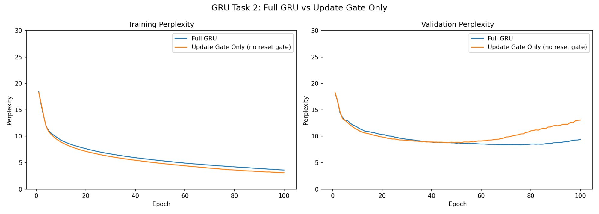
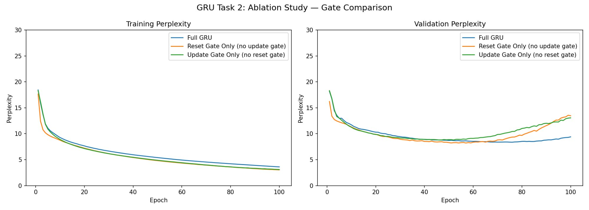

A basic RNN was implemented from scratch in PyTorch without using any built-in RNN modules. The model was trained on The Time Machine dataset using character-level tokenisation, resulting in a vocabulary of 28 characters (26 letters, space, and unknown token) and a corpus of 188,564 characters split 90/10 into training and validation sets.
The architecture consists of five learnable parameter matrices: input-to-hidden Wxh, hidden-to-hidden Whh, hidden bias bh, hidden-to-output Whq, and output bias bq. At each time step the hidden state is updated as H = tanh(X·Wxh + Hprev·Whh + bh) and the output as Y = H·Whq + bq. Gradient clipping with θ = 1.0 was applied to prevent exploding gradients.
Four configurations were trained for 100 epochs, varying the number of hidden units, learning rate, and sequence length.
| Config | Hidden | LR | Seq Len | Train PPL | Val PPL |
|---|---|---|---|---|---|
| Config 1 | 256 | 0.5 | 35 | 3.91 | 10.58 |
| Config 2 | 512 | 0.5 | 35 | 3.20 | 12.53 |
| Config 3 | 256 | 0.1 | 64 | 7.42 | 10.11 |
| Config 4 | 512 | 0.3 | 64 | 4.95 | 9.46 |
Table 1. RNN hyperparameter configurations and final perplexity.

Higher learning rates led to faster convergence but more pronounced overfitting, as seen in Configs 1 and 2 where the train–val gap widens significantly after epoch 40–50. Longer sequences (T=64) helped capture more context but required lower learning rates for stable training. The 256-unit hidden size consistently generalised better than 512 units, confirming that model capacity should be matched to dataset size.
Four combinations of activation function (tanh vs. ReLU) and gradient clipping (enabled vs. disabled) were evaluated to analyse their impact on training stability and final performance.
| Config | Activation | Clipping | Train PPL | Val PPL |
|---|---|---|---|---|
| Tanh + Clipping | tanh | Yes | 3.90 | 10.60 |
| Tanh + No Clipping | tanh | No | 4.05 | 10.22 |
| ReLU + Clipping | ReLU | Yes (LR=0.1) | 4.96 | 8.28 |
| ReLU + No Clipping | ReLU | No (LR=0.1) | 4.94 | 8.42 |
Table 2. Activation function and gradient clipping comparison.



Tanh produced nearly identical results with and without gradient clipping (Val PPL 10.60 vs. 10.22), confirming that tanh's saturating nature — squashing all outputs to (−1, 1) — inherently prevents gradient explosion, making explicit clipping largely redundant.
ReLU achieved significantly better validation perplexity (8.28 with clipping, 8.42 without) compared to tanh (~10.2–10.6). ReLU without clipping did not fail catastrophically as traditionally expected, attributed to the conservative learning rate (LR=0.1) which prevented gradients from growing uncontrollably. The minimal gap between ReLU + Clipping and ReLU + No Clipping suggests that at sufficiently small learning rates, gradient clipping provides diminishing returns regardless of activation function. The better generalisation of ReLU is likely due to avoiding the vanishing gradient problem inherent in tanh's saturating behaviour during backpropagation through time.
A GRU was implemented from scratch in PyTorch, extending the basic RNN with two gating mechanisms. The forward pass at each time step is:
Reset gate: R = σ(X·Wxr + H·Whr + br)
Update gate: Z = σ(X·Wxz + H·Whz + bz)
Candidate state: H̃ = tanh(X·Wxh + (R⊙H)·Whh + bh)
New hidden state: H = Z⊙H + (1−Z)⊙H̃
The reset gate controls how much of the previous hidden state contributes to the candidate, enabling selective forgetting. The update gate controls interpolation between the old state and candidate, enabling long-term memory retention. Input projections were pre-computed for all time steps before the sequential loop to improve efficiency.
Four configurations were trained for 100 epochs with gradient clipping (θ=1.0), using the same hyperparameter ranges as Part 1 to enable direct comparison.
| Config | Hidden | LR | Seq Len | Train PPL | Val PPL |
|---|---|---|---|---|---|
| Config 1 | 256 | 0.5 | 35 | 3.63 | 9.22 |
| Config 2 | 512 | 0.5 | 35 | 3.38 | 10.04 |
| Config 3 | 256 | 0.3 | 64 | 6.13 | 9.01 |
| Config 4 | 512 | 0.3 | 64 | 6.28 | 9.09 |
Table 3. GRU hyperparameter configurations and final perplexity.

| Model | Best Val PPL | Best Configuration |
|---|---|---|
| Basic RNN | 9.14 | H=256, LR=0.5, T=35 (epoch 40) |
| GRU | 9.01 | H=256, LR=0.3, T=64 (epoch 100) |
Table 4. Best validation perplexity: GRU vs. basic RNN.
The GRU outperforms the basic RNN in validation perplexity (9.01 vs. 9.14). The improvement is modest on this small dataset but would become more pronounced with longer sequences or larger corpora. Notably, longer sequence lengths (T=64) benefit GRU more than RNN — GRU improves validation PPL with longer context while RNN tends to struggle — directly demonstrating the practical benefit of gating for long-range dependencies. GRU training takes approximately 11 minutes per configuration on an A100 GPU (~6–7 seconds per epoch), versus faster training for the basic RNN due to fewer parameters.
An ablation study was conducted to isolate the contribution of each GRU gate. Three variants were trained using the same base configuration (H=256, LR=0.5, T=35, 100 epochs): Full GRU (both gates), Reset Gate Only (update gate disabled, Z forced to 0), and Update Gate Only (reset gate disabled, R forced to 1).
| Model | Best Val PPL | Best Epoch | Final Val PPL | Train PPL |
|---|---|---|---|---|
| Full GRU | 8.39 | 70 | 9.40 | 3.61 |
| Reset Gate Only | 8.29 | 50 | 13.47 | 3.03 |
| Update Gate Only | 8.86 | 50 | 13.06 | 3.11 |
Table 5. Ablation study results — full GRU vs. single-gate variants.



| Model | Train PPL | Final Val PPL | Gap |
|---|---|---|---|
| Full GRU | 3.61 | 9.40 | 5.79 |
| Reset Gate Only | 3.03 | 13.47 | 10.44 (+80%) |
| Update Gate Only | 3.11 | 13.06 | 9.95 (+72%) |
Table 6. Train–validation gap comparison across GRU ablation variants.
| Model | Generated Text |
|---|---|
| Full GRU | time traveller and the distance of the distances of the distance... |
| Reset Gate Only | time traveller perceiventil for the fire and the morlocks down... |
| Update Gate Only | time traveller stood le survent i facceed the white sphinx i had... |
Table 7. Sample generated text at epoch 100 for each ablation variant.
The reset gate provides short-term flexibility by allowing the model to selectively forget irrelevant past context. Without the update gate (Reset Gate Only), the hidden state is fully replaced at every step, allowing rapid adaptation but destroying long-term memory. This leads to aggressive memorisation of training patterns — achieving lower training PPL (3.03) but catastrophically overfitting to 13.47 validation PPL, a 62% degradation from its peak. The invented word "perceiventil" in the generated text confirms the model has memorised character n-grams without learning coherent structure.
Without the reset gate (Update Gate Only), H̃ always incorporates the full previous hidden state, limiting the model's ability to adapt when old context becomes irrelevant. It achieves the worst peak validation PPL (8.86) and similarly overfits to 13.06. Generated words like "survent" and "facceed" indicate character-level memorisation without coherent language structure.
Critically, both ablation models achieve lower training PPL than the Full GRU (3.03 and 3.11 vs. 3.61), confirming they are better at memorising training data. Yet their final validation PPL is 43% and 39% worse respectively. The two gates act as a synergistic regularisation mechanism: the reset gate prevents stale information accumulation while the update gate prevents wholesale replacement of useful long-term context. Together they produce a model that generalises well without sacrificing learning ability — something neither gate achieves independently.
This project implemented and analysed basic RNN and GRU architectures from scratch in PyTorch on The Time Machine dataset. The key findings are summarised below.
| Finding | Detail |
|---|---|
| Best RNN config | H=256, LR=0.5, T=35 achieved peak Val PPL of 9.14 at epoch 40. Early stopping strongly recommended. |
| Larger hidden size hurts | H=512 consistently increased overfitting without improving generalisation. Capacity must match dataset size. |
| Gradient clipping negligible for tanh | tanh's saturating nature naturally suppresses gradient explosion, making explicit clipping redundant. |
| ReLU outperforms tanh | ReLU achieves Val PPL 8.28 vs. tanh's 10.60. Learning rate more important than clipping for gradient stability. |
| GRU beats basic RNN | Best Val PPL 9.01 vs. 9.14. Advantage most pronounced for longer sequence lengths (T=64). |
| Both gates are necessary | Removing either gate results in 39–43% worse final Val PPL despite lower training PPL — severe overfitting. |
| Gates act as regularisers | Reset and update gates work synergistically. Neither alone can replicate the generalisation of the full GRU. |